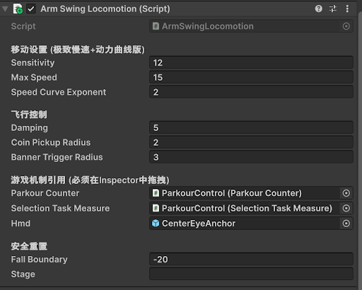
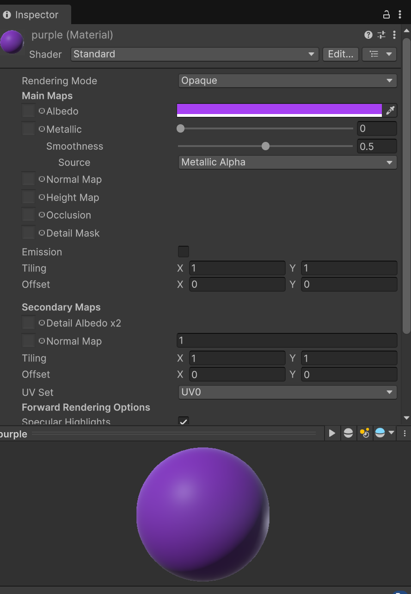
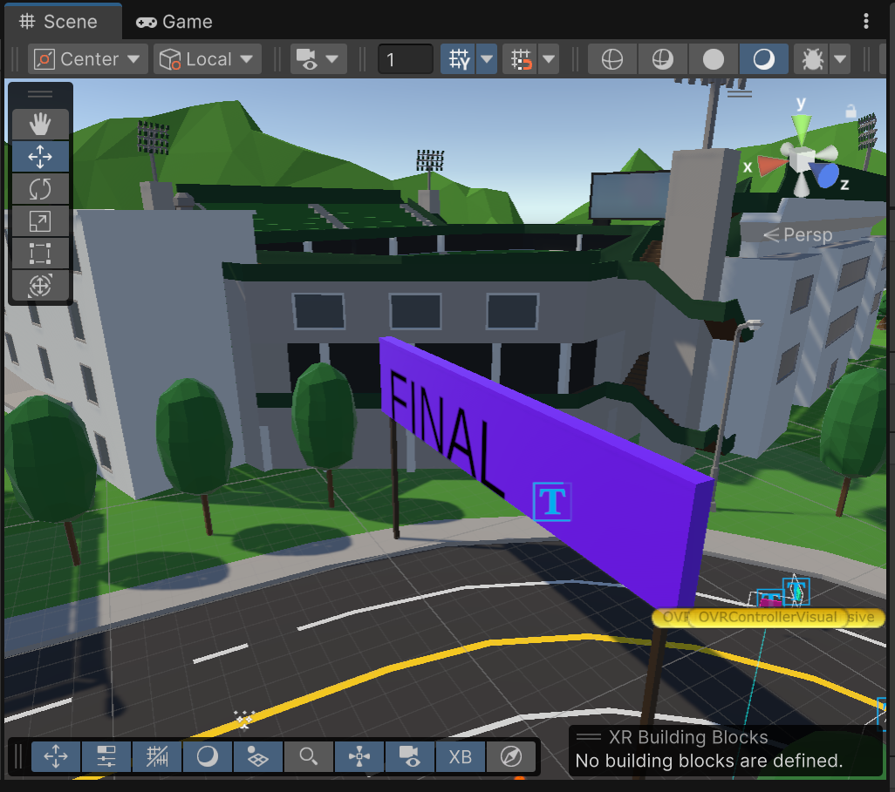
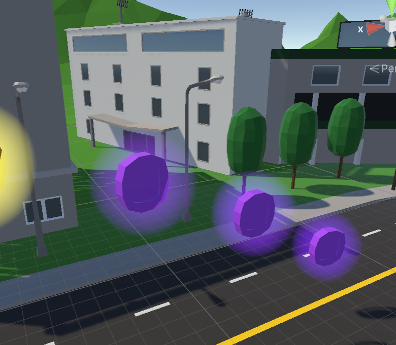

Hybrid Biometric Locomotion: Arm-Swing & Avian Flight
1. Interaction & Concept
In this experiment, I designed a system called “Hybrid Dynamics” to provide an immersive and comfortable VR experience using natural body movements.
-
Walk Mode: “Walking” Players use the Index Trigger and alternate swinging their arms up and down to move. The system mimics human walking, from slow walking to running.
-
Flight Mode: “Avian Flight” To address vertical challenges (like high coins), I added a “bird flight” metaphor. Players can spread their arms and look up to seamlessly transition from walking to flying.
Goal: To use body movement and visual feedback to improve immersion and reduce motion sickness.

2. Technical Implementation
The core logic of my code converts physical movements into 3D space vectors.
-
A. Core Logic: Gaze-directed Steering I didn’t write complex mode-switching code. Instead, I used a mathematical approach that tracks the HMD’s forward vector.

-
Explanation:
- When players look straight ahead, the movement is walking.
- When they look up and swing their arms, they fly towards their target.
-
-
B. Parameter Tuning To balance feel and comfort, I set fine-tuned dynamic parameters:
speedCurveExponent = 2.0f: A quadratic curve, filtering out minor controller shakes, making only intentional swings noticeable.damping = 5.0f: Simulates inertia to prevent sudden stop effects, avoiding visual tearing. 
3. Process & Problems
Challenges:
- Script Conflicts:
Unity projects come with default movement scripts that interfered with my custom Arm-Swing logic.
Solution: I created an automatic tool to disable conflicting components during startup.

- From “Coordinate Displacement” to “Speed Mapping”:
Initially, I tried using positional changes to move the player but it felt unnatural.
Solution: I switched to using the velocity of the controller, making movement feel smoother and more realistic.

- Motion Sickness from High-Speed Movement:
High-speed arm swings caused a “teleporting” visual effect, leading to motion sickness.
Solution: I introduced a speed curve and a speed cap to smooth the transition between low and high speeds.


4. Lessons Learned
-
Comfort First: It’s better to limit maximum speed than to allow players to experience uncomfortable acceleration.
-
Automation is Key: Automated scripts like FixBannerPhysics save a lot of debugging time.
-
Focus on Gaze Direction: When designing flight modes, using “head orientation” for movement is more natural and reduces directional errors caused by hand movements.
5. Bonus: Paris-Saclay Flavor
As a student at Université Paris-Saclay, I incorporated the school’s color (purple) into the project: 
- The Final Banner was changed to purple. 
- The last three coins were given a glowing purple material effect. 
6. Code & GitHub
GitHub repository link: [link]
7. Demo Video
Video link: [link]